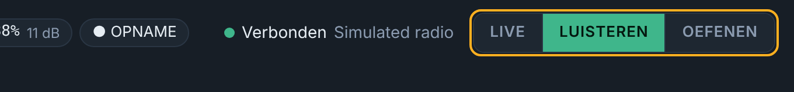
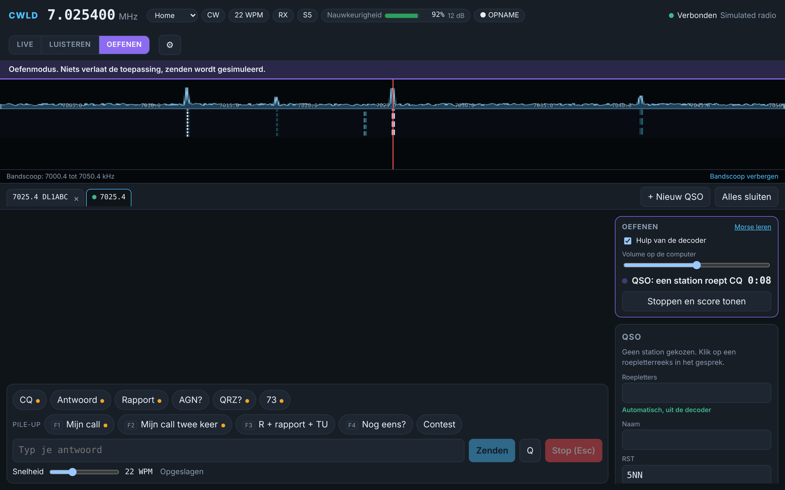

MModi
LIVE
De enige modus die zendt. Altijd in het rood.
LISTEN
Alleen ontvangen en decoderen. Veilig om te luisteren en te testen.
PRACTICE
Gesimuleerde stations in je koptelefoon. Er verlaat niets je computer.

KToetsen
| Toets | Wat het doet |
|---|---|
| Esc | Zenden meteen stoppen |
| Enter | Contest: het juiste bericht voor dat moment zenden (Run: CQ, uitwisseling, AGN?, dan TU en loggen) |
| Space | Contest: volgend veld in de invoerlijn |
| F1 to F8 | Contest: CQ (S&P: je roepletters), uitwisseling, TU en loggen, je roepletters, zijn roepletters, QSO B4, NR?, AGN |
| Ctrl+R | Contest: wisselen tussen Run en S&P |
| Ctrl+W | Contest: de invoerlijn wissen |
| Ctrl+F6, Ctrl+F7 | Contest: decoder Strongest en AFC |
?Vragen
CWLD vindt de radio niet
Controleer dat de radio aan staat en de kabel data doorgeeft. Open Apparaatbeheer (rechtsklik op Start) en kijk onder Poorten (COM en LPT). Kies in CWLD de eerste poort en, als er geen antwoord komt, de tweede. Controleer dat het CI-V-adres B6 is.
De frequentie op het scherm volgt de radio niet
Zet CI-V Transceive aan in de radio: MENU, SET, Connectors, CI-V. CWLD vraagt de radio ook af en toe om de frequentie, maar met Transceive gaat het meteen.
De waterfall is leeg en er wordt niets gedecodeerd
Kies in Instellingen, Audio, USB Audio CODEC en klik op Herstart met deze instellingen. Controleer dan de drie microfoon-privacyschakelaars van Windows en zet geluidsverbeteringen uit. Zorg dat er een CW-signaal in het filter van de radio staat en dat het AF-niveau niet nul is.
Windows of mijn antivirus blokkeert het installatieprogramma
CWLD is nog niet digitaal ondertekend, dus Windows is voorzichtig. Klik op Meer info en dan op Toch uitvoeren. Verwijdert een antivirus het bestand, vergelijk dan de SHA-256-controlesom met die in het downloadgedeelte en sta het bestand toe.
Zendt CWLD uit zichzelf?
Nee. Alleen de LIVE-modus zendt, en alleen als je typt, een toets indrukt of op een chip klikt. Esc stopt meteen. LISTEN en PRACTICE zenden nooit.
Werkt mijn paddle nog?
Ja. De keyer van de radio werkt zelfstandig en CWLD blokkeert hem nooit.
Waar staan mijn gegevens?
Alles blijft op je computer. Instellingen en logboek (logbook.db, met een reservekopie bij elke start) staan in %APPDATA%\io.github.on3vz.cwld. Opnames gaan naar Documenten\CWLD. Druk op Windows+R, plak de mapnaam en druk op Enter om ze te openen.
Hoe update ik?
Download het nieuwste installatieprogramma van de startpagina en voer het uit over de oude versie. Je instellingen en logboek blijven bewaard.
Hoe krijg ik mijn QSO's in mijn logprogramma?
Gebruik de exportfunctie van het logboek. Die schrijft een ADIF-bestand, na een controlevenster met fouten en waarschuwingen. Importeer dat bestand in Log4OM of een ander logprogramma.
CContest
Zet de contestmodus aan en kies een contestprofiel. De invoerlijn neemt roepletters, rapport, volgnummer en het extra veld van het profiel. Het volgnummer gaat omhoog als je logt, niet als je het zendt. Een rode DUPE toont dezelfde roepletters op dezelfde band, en loggen blijft mogelijk.
De testmodus (oranje) schrijft naar een apart testlog dat nooit meetelt voor dupes en nooit in de export komt.
PPortable
Kies het profiel Home of Portable in de statusbalk. Voor een activatie (WWFF/ONFF, POTA, SOTA) vul je de referentie en het grid in. Beide komen in elk QSO, en een controlevenster voor de ADIF-export vangt ontbrekende grids of foute referenties op.
OOefenen
PRACTICE decodeert een gesimuleerde band en speelt die af op je computer. Er wordt niets gezonden, dus draai de AF-knop van de radio laag. Kies een oefening, een snelheidsbereik en een signaalsterkte, en bekijk op het einde je score. Zet de hulp van de decoder uit om op het gehoor te kopiëren.
